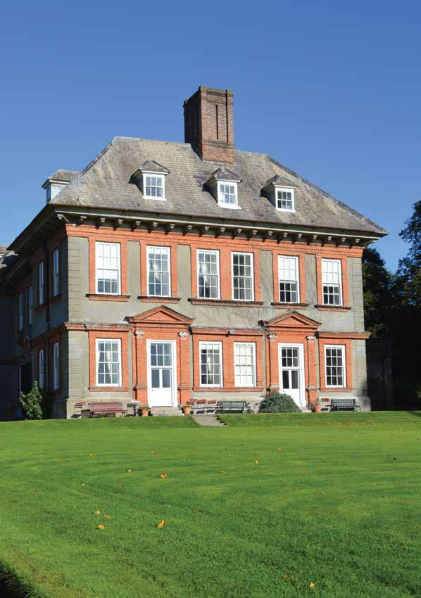

Beaulieu House
Beaulieu is an ancient estate overlooking the banks of the River Boyne, just over three miles from the town of Drogheda. For over 800 hundred years it has been home to just two families, the Plunketts and the Tichbournes.
Originally the site of a Norman fortress, the Plunkett family, first inhabited a motte and bailey and then a Jacobean house, the remains of which can be found in the fabric of the building you see today. No one knows where Beaulieu's name originated, however, it can be seen on a 1650 map of the area. One of the adjoining town lands has the wonderful name of Belle Tichbourne, after the family whose descendants still live in the house. Co-incedentally, 'baile'- is a Gaelic word which means town land, or home - and one can imagine that Beaulieu - keeping lookout on the Boyne river - was an important and strategic site.
The buildings at Beaulieu, evolved over time, from tower house to Jacobean building, finally being redesigned as a grand mansion, in the English style, by the Tichbourne family. As such, it is a rare example of late C17th Irish, domestic architecture to have survived without alterations. With the building of the house completed mainly between 1660-66, interior decorations, paintings, wood carvings and grand staircase were the last of the improvements added in 1723.